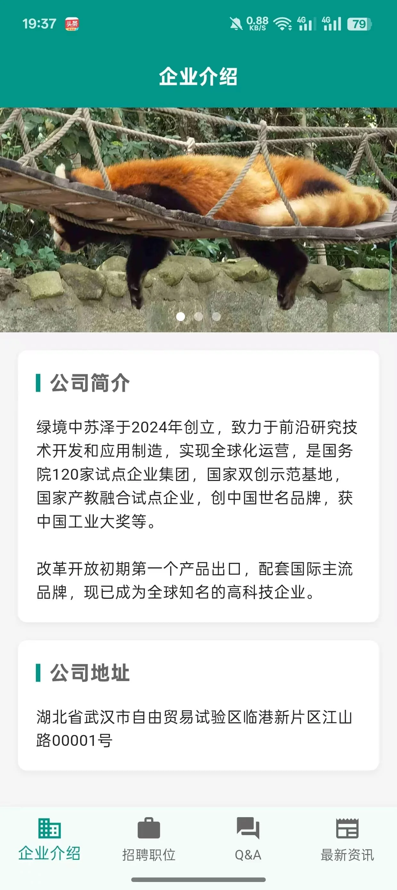

跨平台应用开发
项目概述
这是一个基于uni-app开发的跨平台应用项目，支持H5、微信小程序、Android、iOS等多端运行。项目采用一套代码，多端部署的开发模式，显著提升了开发效率，同时保证了各端的一致用户体验。
项目亮点
- 一套代码，多端运行，显著提升开发效率
- 统一的用户体验，保持各端界面一致性
- 完善的性能优化，确保各端流畅运行
- 灵活的组件化开发，提高代码复用率
- 支持条件编译，处理平台差异
核心功能
- 多端适配：支持H5、微信小程序、Android、iOS平台
- 统一的UI组件库，确保各端视觉一致性
- 条件编译处理平台差异，优化各端体验
- 完善的错误处理和异常捕获机制
- 支持离线数据存储和同步
- 集成第三方SDK，扩展应用功能
技术栈
- 开发框架：uni-app
- 前端框架：Vue 3
- 状态管理：Pinia
- UI框架：uView UI
- 构建工具：HBuilderX
- 版本控制：Git + GitHub Actions
项目展示
H5端 - 首页展示
小程序端 - 功能展示

Android端 - 界面展示
iOS端 - 界面展示
×